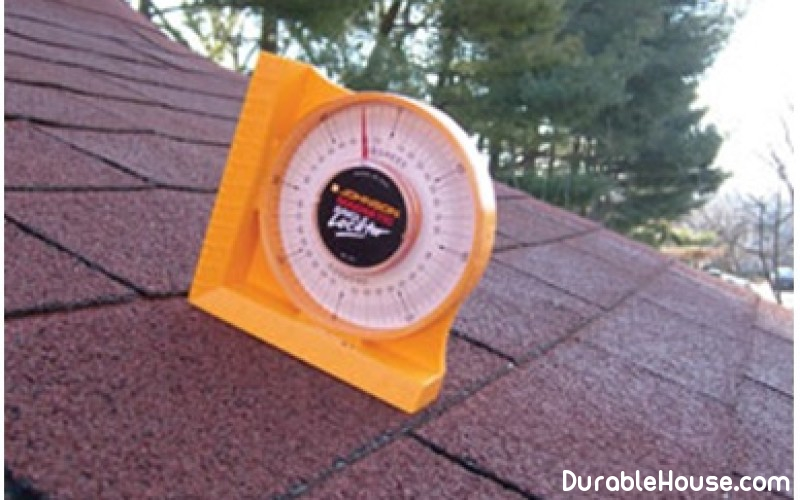

How to calculate the roof slope
The roof must reliably protect the building from the effects of atmospheric Precipitation, be waterproof, have sufficient fire resistance, provide a reliable Discharge of atmospheric water and have access to repairs during operation. Achieve the fulfillment of all These tasks are impossible without a competent calculation of the slope of the roof.
The quality and longevity of the roof depends to a large extent on the quality and durability of the roof. The durability of the house as a whole and its individual parts. It is recommended to use the simplest Forms of pitched roofs: gable, mansard, hip (semi-high) and single-pitched (for Additions, verandas and outbuildings). The usual pitched roof consists of a roof, Which directly protects against rain and snow, crates and rafters supporting the roof And transferring the load to the walls from the weight of the entire roof, as well as from additional loads in the form Snow, wind, etc.
The angle of inclination (slope) of the roof depends on the climatic conditions Area of construction, roofing material and can vary within a significant range: from 11 to 45 ° and more. The drier and warmer the climate, the flatter the roof may be. The steeper the angle Slope, the less accumulated snow on it and, consequently, the snow load. At a slope of 45 °, the weight of snow can be practically ignored.
At the same time, with an increase in the angle of inclination, it increases sharply Wind pressure on the roof (changing the angle from 11 to 45 ° increases the wind pressure by 5 times), Which causes the need to strengthen the rafters and the crate.
In addition, as the slope increases, so does the cost Roofing. For example, when building a roof with a slope of 45 ° it is required to be one and a half times larger Material than for flat, and with a roof slope of 60 ° - twice as much.
Choosing this or that roof configuration, That the choice of a roofing covering has a direct dependence on the angle of inclination. With regard to it Apply a certain roofing material and arrange the number necessary for a given bias Layers.
Roofing
Materials on technical, economic and physical properties are grouped in groups 1-11. On
They are indicated by arched arrows. Inclined lines pothook the slope of the ramp.
The heavy inclined line on the graph is the ratio of the height of the ridge h to the half of its placement
L / 2. The ratio 1: 2 (shown at the top of the inclined line) indicates that the vertical
The segment h is placed on the horizontal segment l / 2 twice. On a semicircular scale this
The inclined line shows the slope of the roof in degrees, and on the vertical - in percent. Similar
According to the schedule, the smallest bias for a given group of recommended
Roofing materials.
For an example, let's define the smallest using this chart
The necessary slope of the roof of the building under construction with the roof of the shingles.
On the graph, we find an inclined line, which rests against Arched arrow 2. At the intersection of this inclined with a vertical scale (on the graph it Left), we find the answer: the minimum required slope for a given roof is 50%. Knowing that The slope of the slope is expressed by the ratio of the height of the ridge to the half of its foundation, Slope i if the height of the ridge h = 3 m, and the l = 12 m lay-out: i = h: (l / 2) = 3,2: (12/2) = 0.53
For a slope to be expressed as a percentage, this ratio is multiplied by 100: I = 0.53x100 = 53.
The estimated slope is 53% while observing the above constructive Dimensions of the roof provides a normal discharge of storm water.
The slope of the roof in the valley must be at least 1%.
In roofs with a slope of up to 10%, made of roll Bitumen-polymer, bituminous materials with fine-grained sprinkling or from mastic Materials, as well as in roofs with a slope of up to 2.5%, made of film rolls Materials by sticking, to protect the top layer of the main waterproofing carpet A protective layer of gravel or coarse-grained Crumbs) with a mark of frost resistance not lower than 100.
The thickness of the protective layer of gravel should be 10-15 mm, from Coarse-grained powder, applied in the construction conditions, 3-5 mm.
In roofs with slopes up to 2.5% of elastomeric film rolls Free-laying materials, gravel Loading layer at the rate of 50 kgf / m2.
In roofs with a slope of more than 10% of rolled bitumen-polymer or Bituminous materials, the top layer of the main waterproof carpet must be made of Material with coarse-grained dust.
In mastic roofs with a slope of more than 10%, as well as in roofs from Elastomeric film roll materials, made by sticker or free Laying with mechanical fastening at inclines of 2.5% or more, should be provided Protective layer of paint formulations.
When constructing a roof of asbestos-cement corrugated sheets, and Also in roofs from metal corrugated board and metal roofing with a roof slope of up to 20% The joints between the decks should be sealed.
For slopes less than 60%, recumbent folds in sheet metal roofs And copper should be double-sealed and sealed.
Deviation from the given slope of roofs from small-piece Of the materials should be <5%.
Determining Roof slope, you can calculate the useful area of the attic or attic space (Fig. 2).
Depth of roof and climatic zone depends on the way of withdrawal
Rain and meltwater from the roof of the building. Drainage can be organized (outdoor or
Internal) and unorganized - only outdoor.
Outdoor organized drainage system
Arrange with the help of gutters and external drainpipes, based on the following
Instructions: wall or suspended troughs are installed on roofs whose coatings
Are executed with a slope of more than 15%; The longitudinal slope of the gutters must be at least 2%; Bead
Gutters make a height of 120 mm; The distance between the drain pipes is not more than 24
M; The area of the drainpipe is taken at the rate of 1.5 cm2 of its cross-section per 1 m2 of the roof area.
Outdoor organized gutters are recommended to be arranged in such climatic zones, where
The probability of freezing of water in external drainpipes is negligible.
Organized
Drainage of water through internal gutters with an external outlet is recommended for roofs of buildings,
Located in areas with a harsh climate.
The internal drainage system consists of
A water intake funnel, a riser, a discharge pipe and a discharge. This system should provide
Removal of water from the roof, both at positive and at a negative ambient temperature
Air.
It is recommended to drain water from the internal drainage system in
Outdoor network: rainwater or general sewerage. The roof area per one
The drainage funnel is determined from the calculation of not more than 0.75 m2 of roof per 1 cm2 of transverse
Section of the drainage pipe. At each section of the roof, bounded by walls and
Deformation seams, there must be at least two water intake funnels; At the roof area up to
700 m2 is allowed to install a funnel with a diameter of 100 mm.
Water intake funnels
It is recommended to place internal gutters on the longitudinal axis of the roof. Arrange
Drainage funnels and their risers in or outside the outer walls are not allowed, since
Walls can freeze.
Bowls of funnels of internal drainage should be in the most
Low coverage at a distance of at least 500 mm from the parapets and other speakers
Parts of the building. Local roofing in the places of installation of funnels of internal drainage
Should be 15-20 mm in a radius of 0.5 m.
External unorganized drainage system
It is allowed to do on buildings up to five floors in areas with rainfall not
More than 300 mm per year. Roofs of buildings with external drainage are recommended to be made single-edged
With the discharge of water in the direction of the yard facade. Over the entrances to the building with unorganized
Drainage is necessary to arrange visors.